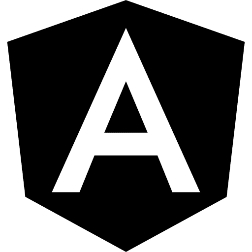

Home
Currículo
Blog
Home
Currículo
Blog
FrontEnd

BackEnd
Tecnologias
Estas são as que mais domino! Veja as outras que tenho algum conhecimento aqui.
Como desenvolvedor fullstack, estou sempre em busca de aperfeiçoamento em diversas tecnologias, e o mundo da programação está em constante evolução, de forma que sempre estou atento às mudanças e entusiasmado para as novidades vindouras!
Angular (framework)
Origem: Wikipédia, a enciclopédia livre.
Angular (comumente referido como 'Angular 2+' ou 'Angular 2') é uma plataforma de aplicações web de código-fonte aberto e front-end baseado em TypeScript liderado pela Equipe Angular do Google e por uma comunidade de indivíduos e corporações. Angular é uma reescrita completa do AngularJS, feito pela mesma equipe que o construiu.
Vue.js
Origem: Wikipédia, a enciclopédia livre.
Vue.js (informalmente chamado de Vue; pronunciado /vjuː/) é um framework JavaScript de código-aberto, focado no desenvolvimento de interfaces de usuário e aplicativos de página única.
Tailwind CSS
Origem: Wikipédia, a enciclopédia livre.
Tailwind CSS is an open source CSS framework. The main feature of this library is that, unlike other CSS frameworks like Bootstrap, it does not provide a series of predefined classes for elements such as buttons or tables. Instead, it creates a list of 'utility' CSS classes that can be used to style each element by mixing and matching.
Laravel
Origem: Wikipédia, a enciclopédia livre.
Laravel é um framework PHP livre e open-source criado por Taylor B. Otwell para o desenvolvimento de sistemas web que utilizam o padrão MVC (model, view, controller). Algumas características proeminentes do Laravel são sua sintaxe simples e concisa, um sistema modular com gerenciador de dependências dedicado, várias formas de acesso a banco de dados relacionais e vários utilitários indispensáveis no auxílio ao desenvolvimento e manutenção de sistemas.
Symfony
Origem: Wikipédia, a enciclopédia livre.
Symfony é um framework livre do tipo fullstack para desenvolvimento de aplicações web, com a linguagem PHP e o paradigma MVC (model-view-controller), disponível sob a Licença MIT. É uma ferramenta com o uso via uma interface gráfica acessada via navegador web.
CodeIgniter
Origem: Wikipédia, a enciclopédia livre.
O CodeIgniter é um framework de desenvolvimento de aplicações em PHP. Seu objetivo, por meio de um abrangente conjunto de bibliotecas voltadas às tarefas mais comuns, de uma interface e uma estrutura lógica simples para acesso àquelas bibliotecas, é possibilitar que o usuário desenvolva projetos mais rapidamente do que se estivesse codificando do zero A primeira versão pública do CodeIgniter foi lançada em 28 de fevereiro de 2006.
2022 © André Nascimento